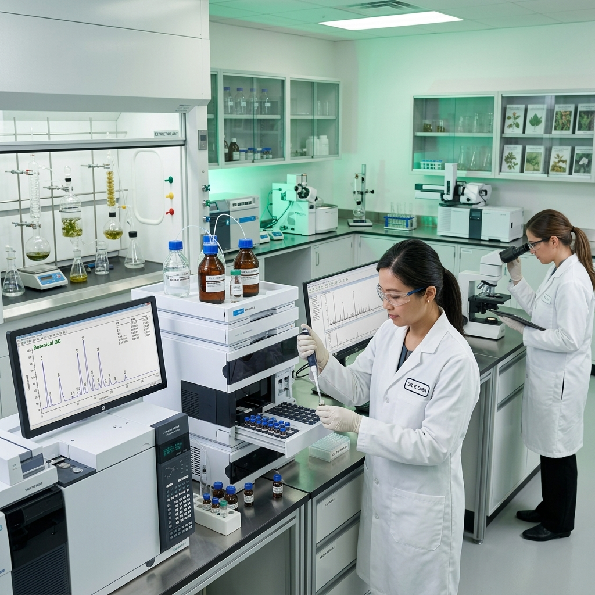
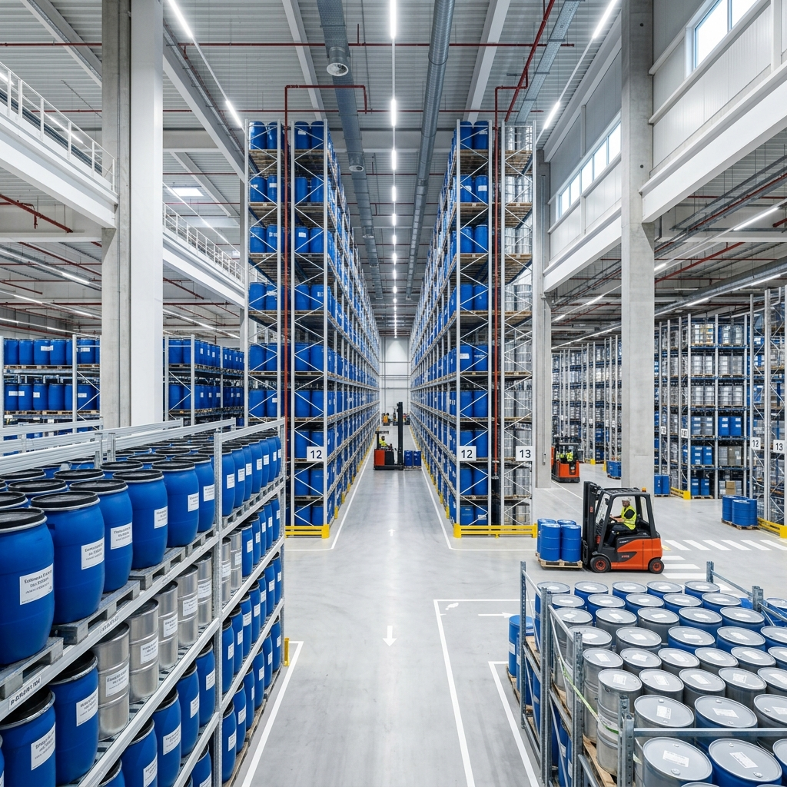

توحيد معايير الذهب: مستقبل اختبار HPLC في الكركمينويدات
كيف تعيد التطورات في الكروماتوغرافيا السائلة عالية الأداء تعريف معايير النقاء لمستخلصات الكركم في السوق الصيدلانية العالمية.
اقرأ المزيد
18 أبريل 2026
الزراعة التجديدية: تأمين مستقبل التوريدات النباتية
استكشاف كيف تشارك دروج ماكس مع المزارع المحلية لتطبيق ممارسات صحة التربة المستدامة...
اقرأ المزيد12 أبريل 2026
التصدير العالمي: 5 تغييرات تنظيمية رئيسية في 2026
تحليل لأحدث تحديثات إرشادات FDA و EMA لمستوردي المستخلصات النباتية...
اقرأ المزيد05 أبريل 2026
CO2 فوق الحرج مقابل استخلاص المذيبات: النقاء؟
مقارنة تحليلية لمنهجيات الاستخراج لتصنيع زيوت أساسية عالية القوة...
اقرأ المزيد02 مايو 2026
علم الأشواغاندا: ما وراء الجذور
لماذا يحدد تركيز الويثانوليدات والاستخراج السريري معالم سوق العافية...
اقرأ المزيد
28 أبريل 2026
مستخلص الروزماري: الحل الطبيعي للملصقات النظيفة
لماذا يحل حمض الكارنوسيك محل مضادات الأكسدة الاصطناعية...
اقرأ المزيد
10 مايو 2026
ما وراء الرائحة: النقاء الجزيئي للزيوت الأساسية
كيف يحمي تحليل GC-MS سلاسل التوريد B2B من الغش...
اقرأ المزيد15 مايو 2026
المحرك الأيضي: تسخير قوة EGCG
لماذا لم تعد مستخلصات الشاي الأخضر الموحدة اختيارية...
اقرأ المزيد20 مايو 2026
ما وراء الراحة التقليدية: صعود مستخلصات 30% AKBBA
لماذا أصبحت بوزويليا سيراتا الخيار الأول للإدارة الطبيعية للالتهابات...
اقرأ المزيد25 مايو 2026
إدارة الوزن الطبيعي: الثلاثي الأيضي
كيف تُحدث مستخلصات الغارسينيا والزنجبيل والبن الأخضر ثورة في السوق...
اقرأ المزيد1 يونيو 2026
الحدود المعرفية: الباكوسيدات وحمض الفولفيك
كيف تقود مستخلصات الأيورفيدا الموحدة الارتفاع العالمي في أداء الدماغ...
اقرأ المزيد
5 يونيو 2026
الرؤية وطول العمر: آفاق الاندماج
تحليل التأثير الجزيئي للوتين والبربارين والجنكة على الجسم المتقدم في السن...
اقرأ المزيد